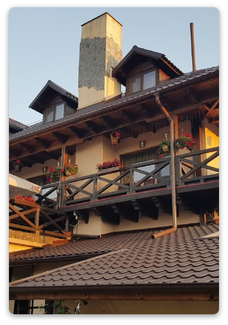
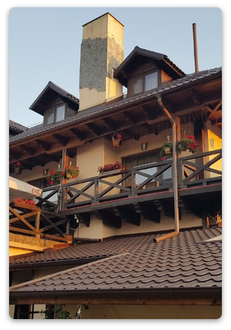
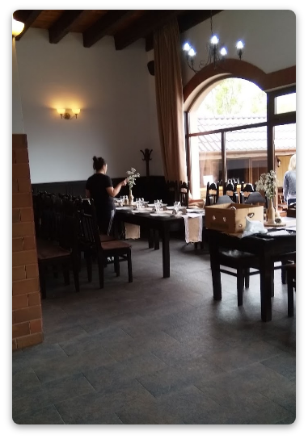
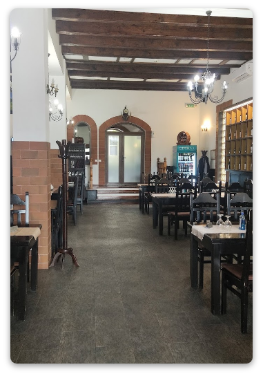
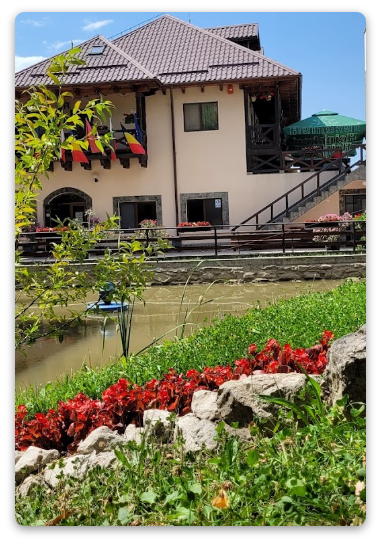
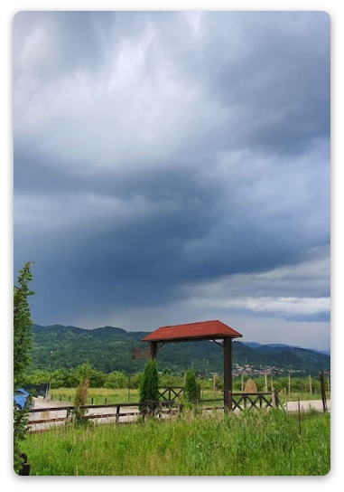
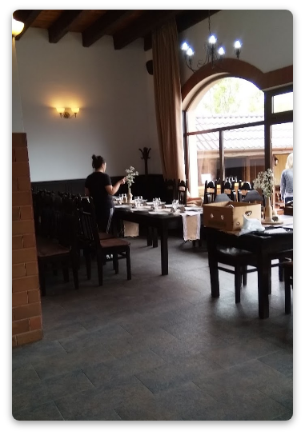
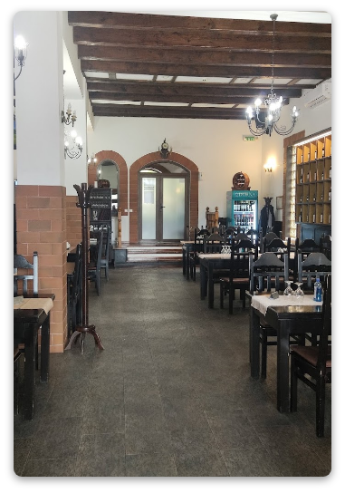
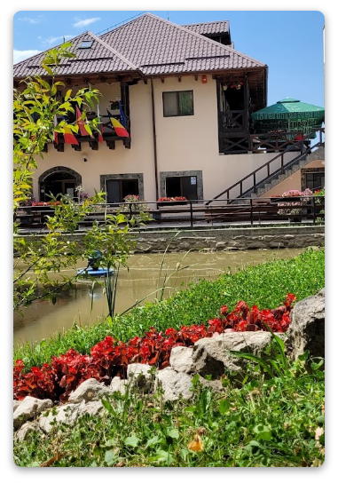
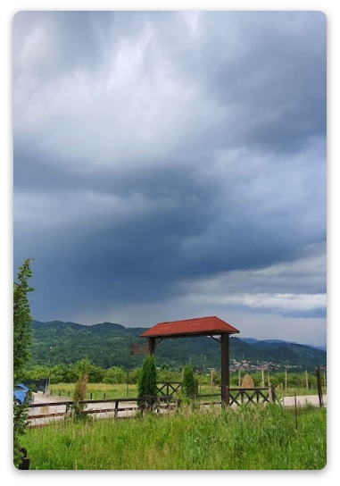

Unde ne aflăm?
Un mare avantaj pentru dumneavoastră, este zona în care se află pensiunea „Hanul din Meri”,
fiind așezată în nordul județului Dâmbovița, pe malul stâng al râului Ialomița,
într-o zonă deluroasă liniștită, înconjurată de do frumoasă livadă de meri.
Accesul la pensiune se face prin două direcții - pe DN71, pensiunea fiind situată la
30km distanță de Sinaia - și 30km distanță de Târgoviște.
Printre principalele atracții și obiective turistice din zona, puteți vizita - Peștera, Babele,
Sfinx-ul - și celelalte locuri impresionante oferite de munții Bucegi,
barajul din stațiunea Pucioasa, barajul Bolboci, Mânăstirea Dealu, și Turnul Chindiei,
locuri în care dumneavoastră puteți petrece momente de neuitat.
 

 






